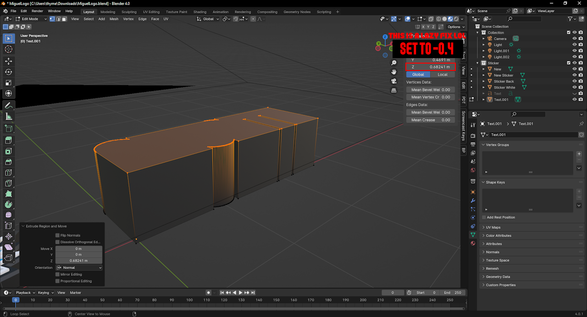
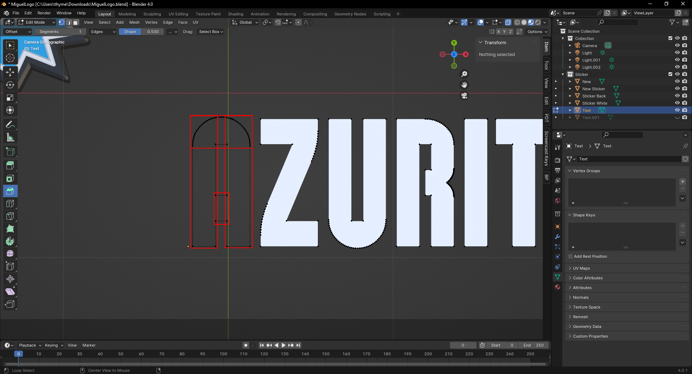

This is a tutorial on how to make New Super Mario Bros.™ U styled logos. With this tutorial, you will be able to learn how to create logos (like the one above), and make other similar Nintendo logos.
If you are fluent with blender, and don't need much of an introduction to it, you can find these little pro tips boxes at the end of each section that tell you everything you need.
Here are some things you're going to need before making your first logos.
Mario Tall Font Miguel's Logo Light Blend File Blender 3/4.0The first thing you should do when you have these prerequisites is opening the blend file with Blender. Press 'Shift + A' to create a new object, and select the Text option. On the right side you should see a green letter 'a' (screenshot below).
Once clicked, you should see 4 inputs, with 4 buttons on the side of each. In the textbox of these inputs, it should say "Bfont Regular". On the left side of these you will see 4 options, those being 'Regular', 'Bold', 'Italic', and 'Bold & Italic'. Find the Regular option and click the folder on the right side. You can select any font, but for this tutorial we are using the Mario Tall font. Once the font is selected, you can press the 'Tab' key on your keyboard (or click the Object Mode text at the top left, and select Edit Mode). For this tutorial I'll be using the the text 'AZURITII'. I'm using this because 1. It's my alias, and 2. the letter 'A' has a hole in it. Our next step is to adjust our letter spacing, and to do this you can scroll below where you selected the font, and its should be present (screenshot below).
The character spacing we're going to be using is '1.020'. Our next step is duplicating the text and preparing it for the extrusion (outline). Switch back to Edit Mode and make sure that the text is selected. Then, we're going to press 'Shift + D' to duplicate the text, and hold 'Control' to snap it on top of the previous text. At the top right where it says 'Scene Collection', select the original text and press the eye icon beside it to hide this layer. Select the other layer and go back to the little green 'a' and scroll up. Find the 'Offset' input and set it to '0.06m'. Select the little circle under the green a. This is the Material Selector. Select the white circle next to the new text, and pick the 'Black Mat' option. Now we're going to move on to the Extrusion.
Text Object 1 (Text) {
font: 'Any (I'm using Mario Tall)',
character-spacing: 1.020
}
DUPLICATE THE TEXT OBJECT
Text Object 2 (Extrusion) {
offset: 0.06m,
material: 'Black Mat'
}
This is the state we should currently be at, though your white text should be hidden. Our next step is to make sure that we are in Object Mode. Select the outline of our text, right click it, and under the 'Convert To' dropdown we're going to click 'Mesh'. Switch to Edit Mode, and you should see these little dots and lines. The dots are the vertices and the lines are the edges. Our next goal is to remove everything on the inside of these meshes, leaving it with just the outline. There are some gaps within the text that should be filled, such as the A and the Z of Azuritii. You don't have to fill these gaps if you think they look fine, but it is HIGHLY reccommended. Gaps between things like the 'ITI' are fine.
Here are some Key Bindings you're going to want to know for this part.
Now, because I don't hate you I'm going to record this next part for you to watch.
You should be left with an (almost) empty stroke, with some lines in it. The next thing we're going to do is remove these lines. It should be a little more difficult with rounded letters, such as the A, but it's still easy to fix. We're going to start by switching to Edge Selection (screenshots below).
Select a chunk of edges (including the ones inside of the curves) and delete them. For the curves, to know if you deleted all the edges in the curve, you can check by pulling the bottom of the curve down and seeing if there is another edge hidden above it (screenshot below).
If you can see this you can undo the move, and try to delete the edge. You should now see an outline that has no faces or edges inside of it. Select the outline and press the 'F' key. Once the outline is filled you want to extrude the outline by selecting all of the vertices (you can press Alt + Z to enter X-Ray mode to make this easier) and press 'E' to extrude. Set the Z of the extrusion to -0.4 (screenshot below).
If you can't see this box or the options, make sure the box is selected. Select the top of the extrusion, and locate the Bevel Tool (screenshot below).
Now, switch to edge selection and select the edges of the letters (screenshot below).
Once all of the edges are selected, preform another bevel on these edges with the the width of 0.02m, and 5 segments. Now, select the bottom of the extrusion (use X-Ray to make sure you get all of the vertices), and go to the properties panel (where you set the (X,Y,Z) positions) and change the X by 0.16084, and change the y by -0.1736 (you can do this with a calculator).
This should be our final result.
Clear the text of all edges and vertices, leaving only an outline.
Bevel the top by 0.018 width with 1 segment.
Once this is done select all of the edges of the letters and bevel them with 0.02m width and 5 segments.
Select the bottom of the extrusion and change the X by 0.16084, and change the y by -0.1736.
What we're going to do next is hide our extrusion layer and show our text layer, as we're now going to be working on that. We're going to convert this into a mesh. After this it is a similar process to the extrusion. We want to delete all of the edges inside of the letters. After this you want to fill every letter EXCEPT for the letters with holes in them, like A or O. There's a process for those.
You wan't to split it up like this (select each of the groups) and fill them individually. This will leave with a few edges, and these are unavoidable. These absolutely WILL cause problems later on, and I will address how to fix them. For now, we're fine. Next step is to extrude the white text by 0.025 on the Z axis. Next we bevel the top of the text with 0.017m (1 segment). Now here come the problems I was talking about (if you have a letter with a hole in it, also image below).
Prepare for another video with this one, I really don't want to type this out.
Our final part is just beveling the corners! For this our settings are 0.0135m (5 segments).
Alright I might've lied about this being that being the last thing, but this will be quick! Right click one of the objects and click Shade Auto Smooth. Then you want to set the angle to 4 degrees. Do this for the other object and Presto! your logo is completed (note that the logos displayed have been downscaled to save file size. since these are 3d models, and we're using blender, the only limit to your image quality is your computer)!